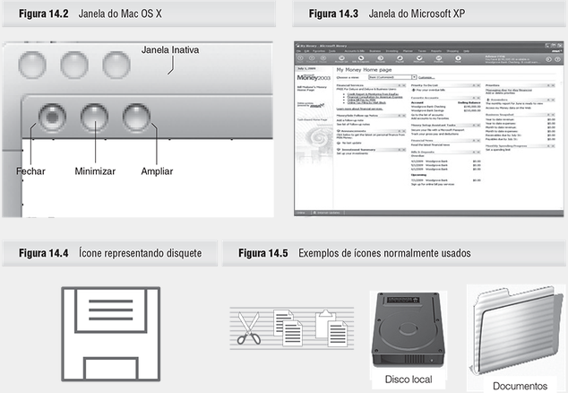

Design de Interface: Aspectos Visuais
O design da interface, que faz a mediação da interação das pessoas com os dispositivos, é uma característica crucial do design de interação como um todo. Ela é frequentemente chamada de interface do usuário (IU) e consiste de tudo o que há no sistema com o qual as pessoas entram em contato, seja física, perceptiva ou conceitualmente.

As pessoas interagem com sistemas por meio dos sentidos, especialmente a visão, audição e tato. O design de interface deve assegurar que os elementos visuais, como botões, sejam suficientemente grandes e claramente identificáveis, proporcionando instruções claras para orientar os usuários. A apresentação de informações deve ser cuidadosamente planejada para que os usuários possam facilmente perceber e entender as relações entre os dados.
Além disso, a interação com sistemas também depende do conhecimento do usuário sobre as capacidades e funcionamento do dispositivo. As pessoas utilizam modelos mentais para navegar, identificar comandos, acessar dados e focar em detalhes específicos. A união dos aspectos físicos, perceptivos e conceituais no design de interface visa criar uma experiência intuitiva, permitindo que os usuários compreendam e utilizem o sistema eficientemente, formando intenções baseadas no entendimento do que o sistema pode fazer e como alcançar seus objetivos.
Linguagens de Comandos
O sistema operacional (OS) é a interface que permite o acesso às funções básicas de um computador ou dispositivo. A maioria dos computadores pessoais utiliza interfaces gráficas do usuário (GUIs), com variações do Windows da Microsoft predominando no mercado. Contudo, muitos computadores, especialmente servidores de internet, rede ou banco de dados, usam o sistema Unix.
Unix é um sistema operacional antigo e robusto, com variantes populares como Linux e BSD, e apesar de frequentemente possuir uma GUI, é fundamentalmente baseado em comandos. Uma linguagem de comando consiste em um conjunto de palavras com uma sintaxe específica. Unix, por exemplo, possui uma vasta gama de comandos, muitos dos quais podem parecer obscuros para usuários não familiarizados.
Comandos em Unix, como grep, exemplificam a complexidade dessas linguagens de comando. Grep permite buscas complexas usando expressões regulares, que podem ser básicas ou estendidas. A utilização de argumentos como grep -r amplia suas funcionalidades, mas a curva de aprendizado pode ser íngreme. Essas ferramentas poderosas frequentemente sacrificam a facilidade de uso em prol de suas capacidades avançadas, destacando a importância de conhecer o público-alvo ao projetar interfaces.
| a2p | aclocal | aclocal-1.6 | addftinfo |
| addr | aexml | afmtodit | appleping |
| appletviewer | apply | apropos | arch |
| at | at_cho_prn | atlookup | atprint |
| atq | atrm | atstatus | automake |
| automake | awk | b2m | banner |
| basename | bashbug | batch | bc |
| biff | bunzip2 | bzcat | bzcmp |
| bzdiff | bzegrep | bzfgrep | bzgrep |
| bzip2 | bzip2recover | bzless | bzmore |
| c2ph | c_rehash | cal | calendar |
| cancel | cap_mkdb | captoinfo | certtool |
| Alguns dos comandos disponíveis para BSD Unix | |||
Antes do Windows, o sistema operacional MSDOS dominava os computadores pessoais, utilizando um prompt de comando como interface principal. Os usuários precisavam memorizar e digitar comandos, como dir para listar diretórios. Embora desafiadoras, as linguagens de comando não são intrinsecamente ruins; elas são rápidas e eficazes para usuários familiarizados com os comandos, e a possibilidade de comandos falados oferece uma interface conveniente para situações como sistemas em carros. Comandos específicos, como os do Google, exemplificam sua utilidade em buscas especializadas.
Interfaces Gráficas do Usuário
As Interfaces Gráficas do Usuário (GUIs), presentes em computadores pessoais, smartphones e dispositivos com touchscreen, têm uma história que remonta ao trabalho pioneiro do PARC da Xerox, influenciando tanto o Windows da Microsoft quanto o Macintosh da Apple. Durante as décadas de 1980 e 1990, diversos designs de GUIs surgiram, mas gradualmente o Windows e o Macintosh dominaram o mercado de sistemas operacionais GUI. Atualmente, o Google Chrome OS surge como um potencial desafiante para essa hegemonia.
WIMP
WIMP, acrônimo para janelas, ícones, menus e apontadores, representa a base das GUIs predominantes, como aquelas presentes no Windows e no Mac OS. Originado na Xerox por David Canfield Smith em 1975, este modelo de interface revolucionou a interação computacional.
Composto por elementos como janelas para compartilhar recursos visuais, ícones para representar arquivos e dispositivos, menus para seleção de comandos e apontadores como o mouse, o WIMP adota a manipulação direta, permitindo aos usuários interagirem diretamente com os objetos na tela, em vez de dependerem de comandos textuais. Essa abordagem intuitiva e visual tornou-se fundamental na experiência do usuário moderna.
Boxe - Manipulação direta
A manipulação direta (DM) é uma abordagem de interação na qual objetos gráficos são manipulados diretamente por meio de um dispositivo apontador, como mouse ou touchscreen. Pioneirizada por Ivan Sutherland no Sketchpad e concebida para uso generalizado por Alan Kay, da Xerox PARC, o termo foi cunhado por Ben Shneiderman em 1982, descrevendo uma interface com representações contínuas de objetos, ações físicas simples e operações rápidas e reversíveis.
Com ampla implementação em sistemas como Xerox Star, Apple Lisa e Macintosh, a manipulação direta simplificou a interação do usuário, eliminando comandos complexos e oferecendo feedback imediato. Presente em dispositivos contemporâneos, de smartphones a tablets, essa abordagem continua a moldar a interação tecnológica, tornando-a mais acessível e intuitiva para usuários de todos os níveis de habilidade.
Janelas
Janelas dividem a tela de uma estação de trabalho em áreas independentes de entrada e saída, permitindo que múltiplos processos sejam visualizados simultaneamente. A mudança de foco ocorre quando uma janela é selecionada com um dispositivo apontador, como um mouse ou touchscreen.
Enquanto os primeiros sistemas tinham janelas lado a lado, janelas sobrepostas foram sugeridas por Alan Kay da Xerox PARC. Sistemas com janelas existem em uma variedade de formas, mas em grande parte são variações sobre o mesmo tema básico. O Microsoft Windows domina o mercado de computadores pessoais e, por sua vez, existe em uma variedade de formas, embora elas estejam aparentemente convergindo (pelo menos em termos de aparência) para o formato tipo XP.
Ícones
Ícones são utilizados para representar uma variedade de características e funções, desde softwares até etiquetas de roupas, e são amplamente reconhecidos como auxiliares na identificação de recursos. Embora tenham surgido no Xerox Star e tenham sido objeto de pesquisa nas décadas de 1980 e 1990, o interesse por eles diminuiu desde então. Atualmente, seu design é em grande parte arbitrário, baseando-se em três principais tipos de representação: metáfora, mapeamento direto e convenção.
Os principais aspectos de design discutidos em relação aos ícones são a legibilidade e a interpretação. A legibilidade refere-se à capacidade de diferenciar os ícones em diversas condições de visualização, como iluminação fraca ou tamanho reduzido. Já a interpretação diz respeito à clareza do significado transmitido pelos ícones, destacando a importância de garantir que sejam facilmente compreendidos pelos usuários. Soluções, como balões de ajuda e dicas de ferramentas, são sugeridas para superar os desafios de interpretação sem comprometer a economia de espaço na tela proporcionada pelos ícones.
Lista de Verificação de Ícones de Horton
William Horton (da William Horton Consulting Inc.) criou uma lista de verificação detalhada para ajudar o designer de ícones a evitar uma porção de erros comuns. Reproduzimos aqui seus cabeçalhos principais juntamente de uma pergunta de amostra para cada questão.
Ela inclui os seguintes critérios:
- Compreensível: Os ícones devem ser facilmente compreendidos pelos usuários, transmitindo a mensagem ou ação que eles representam.
- Familiar: Os ícones devem se basear em elementos visuais familiares aos usuários, como símbolos e metáforas comuns.
- Inequívocos: Os ícones devem evitar ambiguidades, garantindo que sua interpretação seja clara e unívoca.
- Memoráveis: Os ícones devem ser facilmente memorizáveis pelos usuários, para que possam ser reconhecidos e utilizados posteriormente.
- Informativo: Os ícones devem fornecer informações relevantes sobre sua função ou propósito.
- Quantidade: A quantidade de ícones em uma interface deve ser adequada, evitando sobrecarregar os usuários com muitas opções.
- Destino: Os ícones devem ser adequados para o público-alvo e contexto de uso, considerando as preferências e necessidades dos usuários.
- Atraente: Os ícones devem ser visualmente atraentes e esteticamente agradáveis, para chamar a atenção dos usuários.
- Legível: Os ícones devem ter uma forma clara e legível, mesmo em tamanhos reduzidos.
- Compacto: Os ícones devem ocupar um espaço visual mínimo, permitindo a organização eficiente da interface.
- Coerente: Os ícones devem seguir uma linguagem visual consistente em todo o sistema ou produto, para criar uma experiência coesa.
- Ampliável: Os ícones devem ser escaláveis para diferentes tamanhos, sem perder a clareza e legibilidade.
Menu
Menus são elementos-chave em sistemas interativos, comuns em uma variedade de dispositivos, desde computadores a telefones celulares e quiosques de touchscreen. Eles oferecem uma maneira organizada e acessível de apresentar uma lista de opções ou comandos aos usuários. A estruturação em tópicos facilita a seleção e execução de ações, sendo amplamente utilizada também em websites para navegação eficiente. No entanto, a complexidade excessiva pode prejudicar a usabilidade, tornando essencial equilibrar a organização com a simplicidade na criação de menus.
Os menus podem ser organizados de forma hierárquica, permitindo a inclusão de subníveis para facilitar a navegação em profundidade. Essa abordagem, conhecida como menus em cascata, é comumente encontrada em interfaces de usuário. Tais menus oferecem uma estrutura visualmente clara, onde os submenus se desdobram conforme o usuário navega pelas opções, proporcionando uma experiência intuitiva de seleção de comando. Essa hierarquia é essencial para lidar com uma grande variedade de opções sem comprometer a usabilidade, garantindo que os usuários possam encontrar facilmente o que estão procurando.

O menu pop-up é uma forma comum de apresentar opções em interfaces de usuário, distinto por não estar vinculado a uma barra de menu fixa. Após a seleção de uma opção, o menu geralmente desaparece, proporcionando uma interação rápida e temporária. Esses menus podem ser contextualizados de acordo com a situação, oferecendo opções específicas dependendo do contexto, como escolhas de arquivo ou pasta, proporcionando uma experiência dinâmica e adaptável para os usuários.
Uma Miscelânea de Widgets
As modernas interfaces gráficas do usuário apresentam uma variedade de widgets, como botões, controles deslizantes e caixas de verificação, que combinam diferentes elementos dos objetos básicos WIMP. No entanto, criar uma GUI não garante automaticamente usabilidade, pois é fácil criar interfaces inadequadas com as ferramentas de desenvolvimento modernas. Para resolver esse problema, foram criados guias de estilo que oferecem orientações para os desenvolvedores de interfaces, visando garantir consistência, usabilidade e diferenciação nos produtos.
Esses guias de estilo estão disponíveis para diferentes tipos de sistemas com janelas e são frequentemente fornecidos por empresas de software específicas, como a Microsoft, que oferece conselhos sobre o agrupamento lógico de elementos e controles para melhorar a organização e a compreensão da interface. Além disso, esses guias também abordam detalhes específicos, como a consistência dos widgets individuais, destacando a importância de uma interface coesa e uniforme, como exemplificado pelo design do iPhone.
Botões de Rádio
- Permitem escolhas exclusivas entre opções.
- Funcionam como botões de rádio em um aparelho, onde apenas uma opção pode ser selecionada por vez.
- Exemplo: Escolher o tamanho do pincel no Photoshop (Padrão, Preciso ou Tamanho do Pincel).
Caixas de Verificação
- Permitem selecionar várias opções ao mesmo tempo.
- Úteis para configurações não mutuamente exclusivas.
- Exemplo: Selecionar opções de filtragem em um e-mail (anexos, promoções, spam).
Barras de Ferramentas
- Coleção de botões agrupados por função.
- Representados por ícones com dicas de ferramenta ao passar o mouse.
- Permitem acesso rápido a ferramentas comuns.
- Configuráveis e ocultáveis para otimizar o espaço na tela.
- Exemplo: Barra de ferramentas do Windows com botões para minimizar, maximizar e fechar janelas.
Caixas de Listagem
- Listam arquivos, opções ou itens.
- Permitem diferentes visualizações (lista, ícones, miniaturas).
- Úteis para apresentar diversas opções de forma organizada.
- Exemplo: Caixa de seleção de arquivos para upload em um site.
Controles Deslizantes
- Permitem ajustes análogos em uma escala.
- Úteis para controlar valores como volume, brilho ou zoom.
- Interface intuitiva para ajustar valores com precisão.
- Exemplo: Controle deslizante de volume em um reprodutor de música.
Preenchimento de Formulário
- Interface popular para coletar informações estruturadas.
- Utilizado em sites, aplicativos e softwares.
- Composto por campos de texto, menus suspensos, caixas de seleção e outros widgets.
- Útil para cadastro de usuários, compras online e outras tarefas que exigem coleta de dados.
- Exemplo: Formulário de inscrição em um newsletter.
Wizard
- Estilo de interação que guia o usuário passo a passo.
- Divide tarefas complexas em etapas menores e fáceis de seguir.
- Frequentemente usado para instalação de software ou configuração de dispositivos.
- Apresenta perguntas, listas de opções e outros tipos de widgets
- Exemplo: Wizard de instalação do Windows.
Alertas
- Informam o usuário sobre eventos importantes ou erros
- Podem ser discretos ou intrusivos, dependendo da urgência da situação.
- Úteis para chamar a atenção do usuário para informações relevantes.
- Exemplo: Alerta de chegada de novo e-mail.
Diretrizes de Design de Interface
Muitos sites oferecem valiosas diretrizes para o design de interface, incluindo Apple® e Microsoft®, que têm suas próprias diretrizes de design. Os ambientes de desenvolvimento também garantem conformidade com esses padrões. No entanto, há muitas questões específicas para diferentes contextos de design, como sites e telefones celulares. Nesta seção, apresentamos diretrizes gerais de design derivadas dos princípios psicológicos discutidos anteriormente.
Diretrizes Extraídas da Percepção
O termo Gestalt foi usado para definir o estudo da psicologia cognitiva que explora as leis da percepção a partir dos dados que os indivíduos obtêm do mundo. Esses atalhos são conhecidos como princípios de percepção visual e mostram como o nosso cérebro cria um padrão.
Essa teoria defende a ideia de que o todo é maior do que a soma de suas partes. Isso significa que a forma como percebemos uma composição visual não depende apenas dos elementos individuais, mas também da relação entre esses elementos e como eles se encaixam para criar uma imagem completa e significativa.
Os 7 princípios de Gestalt

Princípio da proximidade
O princípio da proximidade afirma que coisas que estão próximas parecem ser mais relacionadas entre si do que se estivessem distantes. De uma maneira visual, essas situações estão presente no dia a dia.
Assim, algumas das diversas aplicações desse princípio dentro de User Interface Design se encontram na forma com que elementos diferentes são posicionados de forma próxima para formar um grupo.

Princípio da similaridade
O princípio de Gestalt da similaridade explora o fato de que elementos parecidos são percebidos como parte do mesmo grupo e tendo a mesma função.

Princípio da continuidade
O princípio da continuidade afirma que elementos posicionados em uma linha ou curva são percebidos como mais relacionados do que se não estivessem dispostos desta forma.

Princípio do fechamento
Esse princípio de Gestalt afirma que você utiliza de sua memória para converter objetos complexos em formas simples e/ou já conhecidas.
Você já se deparou alguma vez com uma imagem que não estava totalmente preenchida, porém o seu consciente já havia contornado a parte que faltava? Então, fechamento é isso. Ele faz automaticamente com que nosso cérebro produza contornos que não existem.

Princípio da figura-fundo
Este princípio de Gestalt afirma que nossa percepção instintivamente percebe objetos como estando ou à frente ou ao fundo. Pois, como seres humanos, não somos capazes de focar na frente e no fundo simultaneamente, e precisamos escolher apenas um. Assim, em interfaces, esse princípio é amplamente aplicado em navegações, modais e caixas de diálogo.

Princípio da região comum
O princípio da região comum têm relação com princípio da proximidade, podendo ser até mesmo considerado um sub-princípio deste primeiro. Dessa forma, esse principio afirma que quando objetos são posicionados dentro da mesma região fechada estes são percebidos como parte do mesmo grupo.
Este princípio é encontrado amplamente através da utilização de cards, pois criam regiões isoladas de informação, mesmo quando existem diversos cards próximos uns aos outros.

Princípio do ponto focal
Por último em nossa lista, o princípio do ponto focal afirma que qualquer elemento que se destacar visualmente vai capturar e prender a atenção de quem está vendo.
Dessa forma, em interfaces, utilizamos este princípio ativamente quando tratamos de hierarquia visual ou quando precisamos enfatizar as ações principais que um usuário precisa tomar.

Design para a Memória
O conceito de "Design para a Memória" refere-se à criação de interfaces e sistemas que consideram as limitações e capacidades da memória humana. Este enfoque visa facilitar a interação do usuário com a tecnologia, minimizando a carga cognitiva e melhorando a eficiência e a usabilidade. Ao compreender como as pessoas processam, armazenam e recuperam informações, os designers podem desenvolver interfaces que utilizam o reconhecimento em vez da lembrança, fornecendo pistas visuais e estruturando informações de maneira lógica para apoiar a memória de trabalho e a memória de longo prazo.
No caso da interface widget da paleta de formatação do Microsoft Word, a Microsoft aplicou os princípios do design para a memória para criar uma ferramenta eficiente e intuitiva. Utilizando menus suspensos para selecionar estilos, fontes e tamanhos, a interface elimina a necessidade de lembrar detalhes específicos, permitindo que os usuários reconheçam as opções através de pistas visuais. Isso reduz a carga sobre a memória de trabalho e facilita o processo de formatação de documentos.

Cores no design
A cor é fundamental para nós e desempenha um papel crucial em nossa percepção e interpretação das coisas. Descrever alguém como "sem cor" implica falta de personalidade e interesse. No design de sistemas interativos, a utilização de cores é um desafio complexo. Se fosse simples, a maioria dos eletrônicos domésticos não seriam predominantemente pretos.
A escolha certa da paleta de cores consegue refletir toda a mensagem e o propósito da marca ou de seu produto. As cores possuem um apelo psicológico — mais detalhes adiante — e conseguem transmitir para o usuário qual a personalidade da marca.
Dessa forma, o usuário pode tomar a decisão de usar o seu produto ou não, baseado somente no esquema de cores apresentados a ele. Portanto, a escolha da cor é algo a ser feito logo no começo do projeto para que as decisões de design posteriores estejam coerentes e de acordo com essa identidade.

Diretrizes para a prevenção de erros em design
As diretrizes de design extraídas dos princípios de Reason e Norman visam minimizar erros humanos e promover a usabilidade. Primeiro, é essencial usar o conhecimento do mundo e da mente para criar um bom modelo conceitual do sistema, garantindo a consistência entre os modelos do designer, do sistema e do usuário. Em segundo lugar, deve-se simplificar a estrutura das tarefas para reduzir a carga nos processos cognitivos como memória de trabalho, planejamento e solução de problemas.
Além disso, é crucial tornar visíveis tanto os aspectos de execução quanto de avaliação de uma ação. A visibilidade na execução ajuda o usuário a entender o que é possível e como realizar tarefas, enquanto a visibilidade na avaliação permite medir os efeitos de suas ações. Por fim, explorar mapeamentos naturais e o poder das restrições, sejam naturais ou artificiais, orienta os usuários para a próxima ação ou decisão adequada, alinhando as ações do usuário com suas intenções e expectativas.
Portanto, melhor do que mensagens dizendo que o usuário cometeu algum erro é prevenir que o mesmo não cometa esse erro. Caixas de confirmação, como as que aparecem quando você deleta um arquivo, são um exemplo de como evitar erros.

Diretrizes para o design de mensagens de erro:
- Escolha cuidadosa de palavras e apresentação: Evite linguagem ameaçadora ou alarmante (como "erro fatal" ou "erro catastrófico").
- Evite duplas negativas: Elas podem causar ambiguidades.
- Use linguagem específica e construtiva: Prefira mensagens detalhadas como "por favor, digite seu nome" em vez de generalizações como "dados inválidos".
- Atribua a culpa ao sistema: Formule mensagens de erro de forma que o sistema pareça responsável (por exemplo, "comando não reconhecido" em vez de "comando ilegal").
- Evite o uso de letras maiúsculas: Elas transmitem a impressão de que você está gritando; use uma combinação de maiúsculas e minúsculas.
- Atenção às técnicas de destaque: Não abuse de mensagens piscantes, cores fortes ou avisos cintilantes.
- Limite o número de tamanhos de fonte: Use no máximo quatro tamanhos diferentes por tela.
- Moderação no uso de áudio e vídeo: Evite o uso excessivo desses elementos.
- Uso apropriado de cores: Utilize cores que atendam às expectativas culturais (por exemplo, vermelho para perigo e verde para segurança).

Visualização de Dados
Os designers de interação devem não só criar telas e widgets para a interação, mas também esquematizar grandes quantidades de dados e informações. Após estruturar e organizar a informação de forma eficaz, é crucial fornecer métodos para que os usuários possam interagir com esses dados. As ferramentas e técnicas de navegação influenciam significativamente as inferências que os usuários podem fazer e afetam a experiência geral de interação com a informação.
Design de Informação
O design de informação refere-se, essencialmente, a fazer sentido, a como apresentar dados (frequentemente em grandes quantidades) de uma maneira que as pessoas possam facilmente entendê-los e usá-los. Designers de informação precisam entender as características das diferentes mídias que estão sendo usadas para apresentar os dados e como o meio afeta a forma como as pessoas se movimentam através das estruturas.
Exemplos de design de informação na vida cotidiana
- Receitas
- Manuais de instrução
- Guias de navegação
- Sites de comércio eletrônico e infosites
- Vídeos explicativos
- Relatórios de análise e pesquisa
- Sinalização de orientação
- Explicações de exposições de museus
- Infográficos de como fazer
- Legendas em sua série favorita da Netflix
O design de informação bem-sucedido é uma habilidade extremamente importante para designers gráficos, designers de UI/UX, designers de web, profissionais de marketing e empresas dominarem.
Ele sustenta a capacidade de comunicar mensagens-chave de forma abrangente e eficaz. Pode reduzir o atrito e a frustração, desde tarefas pequenas e simples até a entrega de notícias impactantes e profundas.

Design de Interação
O Design de Interação é uma área da TI — e também do design —, responsável por estudar, planejar e aplicar pontos de interatividade em sistemas digitais e físicos, visando otimizar a relação entre o usuário e o produto. Também é conhecido como interaction design, ou IxD design.
A ideia é que as pessoas tenham contato com os produtos digitais de forma simples, intuitiva e objetiva. Para isso, o designer de interação procura formas de prever como as pessoas vão interagir com o sistema que ele está projetando.
Em casos práticos, falando em projetos de grande porte, o Design de Interação fica responsável por criar wireframes, mockups ou protótipos de sites, enquanto os outros profissionais são responsáveis por fazer o planejamento geral e criar a estrutura.
Os wireframes são uma representação gráfica da disposição dos itens no sistema. Como é apenas um rascunho, não existe necessariamente o compromisso de eles se parecerem com a versão final do produto.
Na verdade, são usados para definir os conceitos que precisam estar inseridos no design do projeto e não para mostrar como ficará o design final.

Já os mockups são versões mais realistas do projeto. É uma foto ou imagem de como ficará o projeto depois de pronto.
Quanto aos protótipos, têm o mesmo objetivo dos mockups, com a diferença de que são uma versão teste do projeto, no qual já pode haver interações. Entretanto, nesse caso não há compromisso com a verdade, ou seja, os dados usados não são reais. Muito pelo contrário, a ideia é testar os limites do projeto.
Conclusão
O design de interfaces visuais é uma habilidade essencial para designers de sistemas interativos. Além de considerar princípios estéticos, os designers devem focar na compreensão e utilização eficaz dos widgets disponíveis, visando uma interação globalmente funcional.
- Interfaces gráficas de usuário: Utilizam uma combinação de características WIMP (Windows, Icons, Menus, Pointer) e outros objetos gráficos como base de design.
- Diretrizes de design: Baseiam-se em estudos de psicologia, percepção e princípios de design gráfico.
- Visualizações interativas: São fundamentais no design de informação quando é necessário exibir grandes quantidades de dados.
Referências
BENYON, David. Interação humano-computador. 2. ed. São Paulo: Pearson, 2011. E-book. Disponível em: https://plataforma.bvirtual.com.br. Acesso em: 24 maio 2024.